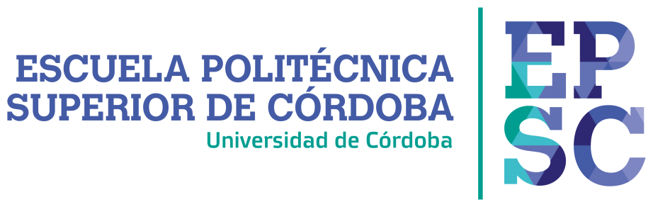
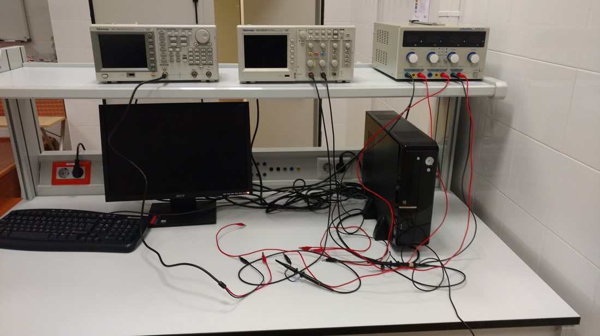
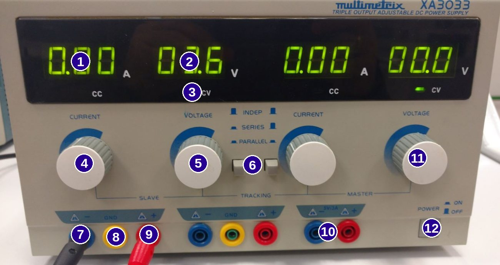
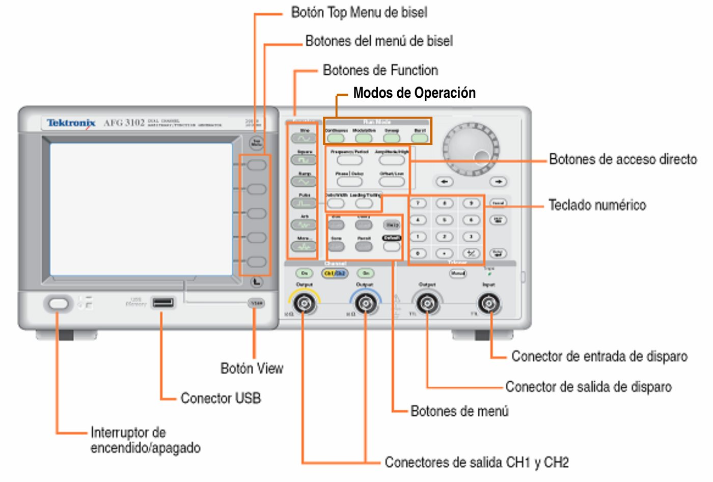
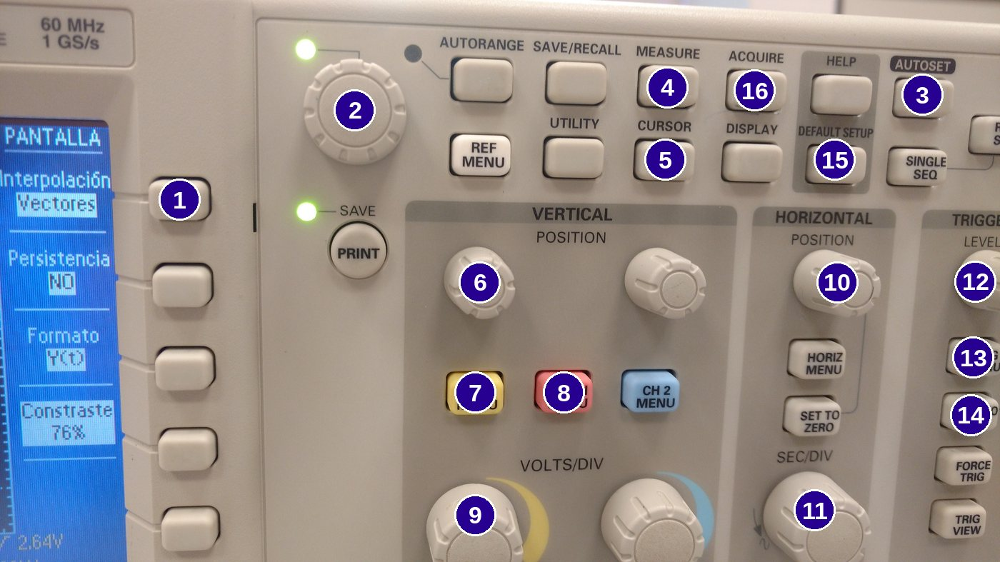
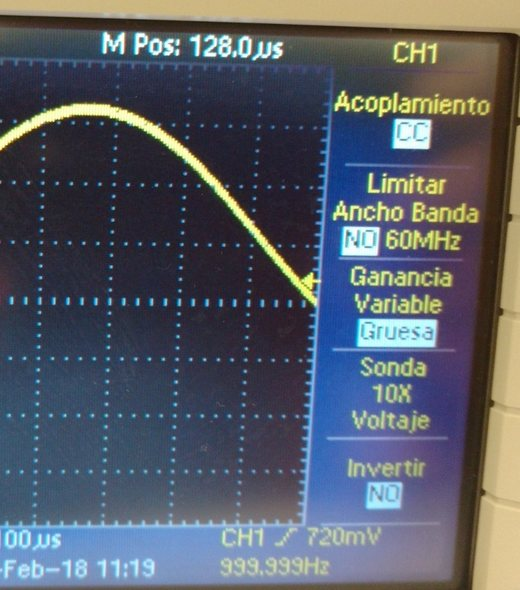

Inicio

Manejo de equipos
Departamento de Ingeniería Electrónica y de Computadores
Grado en Ingeniería Informática · 1.er curso · Curso 2026/2027
Hoja de ruta
¿Por qué esta práctica es la más importante?
- En todas las prácticas usarás los mismos cuatro equipos. Si los dominas, el resto de sesiones serán mucho más rápidas.
- La mayoría de los errores del laboratorio no son de teoría sino de lectura de escalas (V/div, s/div) y de conexión de masas.
- Practica aquí con equipos virtuales antes de tocar los reales.
Objetivos Normas de seguridad · continua y alterna · protoboard y resistencias · fuente, generador y polímetro · osciloscopio: escalas, disparo, acoplamiento, sondas, medidas y modo XY.

Cada puesto: fuente, generador de funciones y osciloscopio. El polímetro y la protoboard los aporta cada estudiante.
Encuesta inicial
¿Qué sabes ya? Escanea el QR · resultados en directo
Fundamentos
Normas de seguridad y magnitudes
- Conecto y desconecto los cables sujetando la clavija, nunca tirando del cable.
- Monto y modifico los circuitos con la alimentación apagada.
- Comunico al profesorado cualquier material defectuoso.
- Al terminar: equipos apagados, cables y sondas en su sitio.
| Magnitud | Unidad | Se mide con… |
|---|---|---|
| Tensión V | voltio (V) | Voltímetro en paralelo; osciloscopio |
| Corriente I | amperio (A) | Amperímetro en serie |
| Resistencia R | ohmio (Ω) | Óhmetro, componente fuera del circuito |
| Potencia P | vatio (W) | Se calcula: P = V·I = I²·R = V²/R |
| Frecuencia f | hercio (Hz) | Osciloscopio |
Ley de Ohm: V = I·R · Prefijos: M = 10⁶ · k = 10³ · m = 10⁻³ · µ = 10⁻⁶ · n = 10⁻⁹
Parámetros de una señal Simulador
Continua (DC): valor y signo constantes, como una pila o el USB. Alterna (AC): cambia de sentido, como la red (230 V, 50 Hz) o el generador. Con offset, una alterna desplazada: su valor medio es el offset.
Protoboard
La placa de prototipos Simulador
El código de colores Simulador
Fuente
La fuente de alimentación

| Elemento | Para qué sirve |
|---|---|
| Indicadores de V y A | Tensión y corriente de cada salida |
| CV / CC | CV: fuente de tensión (normal). CC: limitando corriente |
| VOLTAGE / CURRENT | Tensión de salida / corriente máxima |
| INDEP / SERIES / PARALLEL | Modos de las salidas MASTER y SLAVE |
| Bornes −, GND, + | GND es la tierra del chasis, no necesariamente el negativo |
| Salida fija 5 V | Para circuitos digitales |
Modo serie (tracking) MASTER controla las dos salidas; se une (−) MASTER con (+) SLAVE y ese punto es la masa: +15 V, 0 V y −15 V para el operacional (Práctica 6).
Limitar la corriente Simulador
Generador
El generador de funciones

- Conecta un cable BNC desde CH1.
- Pulsa Sine y Continuous.
- Frequency/Period: teclado + unidad en el bisel.
- Amplitude (en Vpp), Offset y, si hace falta, Phase.
- Carga High Z (Top Menu, Output Menu, Load Impedance).
- Pulsa On: la pantalla indica “Output On”.
Atención a la amplitud “1 V de amplitud” son 2 Vpp. Con la carga en 50 Ω y un circuito de alta impedancia, la amplitud real es el doble.
Genera las señales de las prácticas Simulador
Polímetro
¿Cómo conecto el polímetro? Simulador
Osciloscopio
El osciloscopio

| Mando | Para qué sirve |
|---|---|
| VOLTS/DIV | Escala vertical: voltios por división |
| SEC/DIV | Base de tiempos: segundos por división |
| POSITION | Sube, baja o desplaza la señal |
| CH1 / CH2 MENU | Acoplamiento, sonda, invertir |
| MEASURE · CURSOR | Medidas automáticas y cursores |
| MATH | Canal matemático (CH1 − CH2) |
| TRIG: LEVEL, SET TO 50% | Disparo para una imagen fija |
| AUTOSET · DEFAULT SETUP | Ajuste automático · volver a fábrica |
Lee la pantalla Juego
Elige las escalas, sin AUTOSET Simulador
El disparo: una imagen fija Simulador
Sondas, masas y acoplamiento
Muy importante Las masas de las dos sondas están unidas internamente (y a la del generador a través de la red). Conéctalas siempre al mismo punto. Para medir entre dos puntos sin masa: CH1 en A, CH2 en B y MATH = CH1 − CH2.
- Sonda ×1 o ×10: el menú del canal debe indicar lo mismo que el conmutador. Compruébala con PROBE COMP (cuadrada de 5 V y 1 kHz).
- Modo XY: CH2 frente a CH1. Para la curva de un diodo o un transistor (prácticas 2 y 4).
| Acoplamiento | Qué muestra |
|---|---|
| DC | La señal completa, con su continua. El modo por defecto. |
| AC | Quita la continua: para ver un rizado pequeño sobre una continua grande. |
| GND | Muestra dónde está el 0 V. |

Errores
Síntoma → solución Pulsa cada tarjeta
Cierre
¿Qué has aprendido? Escanea el QR · resultados en directo
Hoja resumen
| Quiero… | Hago… |
|---|---|
| Medir una tensión continua | Polímetro en V⎓, en paralelo, u osciloscopio en DC |
| Medir la corriente | Mido la tensión en una resistencia conocida: I = V/R |
| Ver una señal alterna | Osciloscopio en DC, sonda ×1, AUTOSET y ajuste fino |
| Medir amplitud y frecuencia | Divisiones × escala, o MEASURE (Vpp, Freq) |
| Ver sólo el rizado | Acoplamiento AC y menos V/div |
| Medir entre dos puntos sin masa | CH1 y CH2 a cada punto, masas al GND y MATH (CH1 − CH2) |
| Medir el desfase | φ = 360°·Δt/T |
| Alimentar el 741 a ±15 V | Fuente en serie (tracking), punto medio a masa |
| Proteger el circuito | Limitar la corriente de la fuente antes de conectar |
V = I·R · P = V·I · f = 1/T · ω = 2πf · Vpp = 2·Vp · Vrms = Vp/√2 · Valor = div × escala
Recursos y créditos
Para seguir practicando
- Guía teórica y cuaderno experimental de la Práctica 0 (Moodle): haz los ejercicios de lectura de pantalla antes de la primera sesión.
- Apuntes del generador Tektronix AFG serie 3000 y manual del osciloscopio.
Ficha del recurso
Autora: Cristina Martínez Ruedas (ORCID 0000-0003-0089-1133). Departamento de Ingeniería Electrónica y de Computadores, Universidad de Córdoba. Circuitos y Sistemas Electrónicos, 1.er curso del Grado en Ingeniería Informática, EPS de Córdoba. Versión 1.0, octubre de 2026.
Licencia Creative Commons Reconocimiento-NoComercial-CompartirIgual 4.0 Internacional (CC BY-NC-SA 4.0). Fotografías de los equipos del laboratorio de la asignatura; esquemas y simuladores de elaboración propia.
Volver al inicio